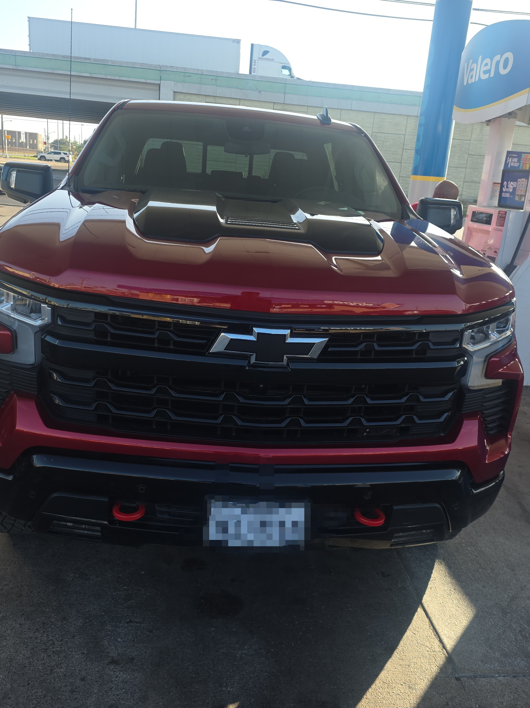

using florocarbon leader is the best invention ever created because it is a stand of nylon that is invisble to the fishes eye which is great because fishes actually have great vision. Especially trouts!.Thre are diffrent cariety of florucarrbon. It can range from 5lb test all the way to 100lb test. There is really not much colorss to pick from, It either going to be clear or very clear light pink. Although i am not willing to risk it over a potential gimmick. I will stick to what i was taught as a kid and expierment some other time.
Fishing is the best best sport ever. You are able to spend family time and have the possibillity of catching a sea monster. My dream is to go deep sea fishing one day and catch a blue fin tuna. I would probably win the lottery before i do so. i am planning on hopefully purchassing my first boat real soon because the feeling of fighting with a big fish and being able to provide for your family feels amazing. although fishing trips 9 out of 10 are more expensive to fund rather than just buying the fish.
I enjoy saltwater fishing and my pockets have been feeling it. I bought a truck specifically for fishing!